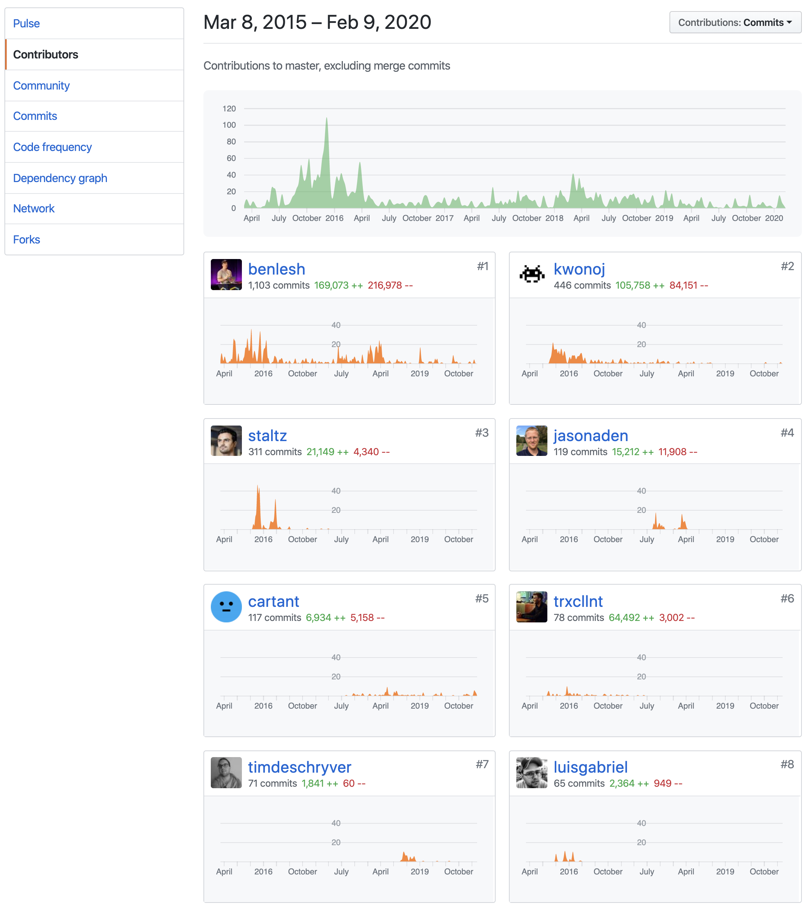

Kotlin - ReactiveX - Kubernetes
Eine Weihnachtsgeschichte
Teil 2 - Entwicklung mit ReactiveX
Was wir erreichen wollen
in einem Satz
Ziel des Kurses ist es die Teilnehmer zu befähigen,
eine Anwendung [Fullstack] über alle Schichten hinweg zu planen, zu entwickeln
und diese dann in der Kubernetes-Cloud zu betreiben
[DevOPs] / [AWL 2.0].
«Enabling Fullstack Development in der AWL 2.0»
Was erwartet Euch in dieser Workshop‑Serie?
- Wir giessen gemeinsam eine Weihnachtsgeschichte in Code
- Folgende Workshopblöcke sind geplant…
-
WS1 Die Grundlagen der Programmiersprache «Kotlin» 2 -
WS2 Grundlagen der asynchronen und funktionalen Programmierung mit «observable streams» und ReactiveX 2 -
WS3 Hochperformante Microservices
mit Quarkus und GraalVM 2 -
WS4 Betrachtung aus Sicht «DDD» 1 -
WS5 Vorbereitung für die AWL 2.0 und Deployment in die Kubernetes Cloud 3-5 -
WS6 Echtzeitdarstellung in Angular mit WebSockets oder Server‑Sent Events 3-5
-
ReactiveX
…ist eine Bibliothek zur Erstellung von asynchronen und ereignisbasierten Programmen unter Verwendung beobachtbarer Sequenzen.
Sie erweitert das Beobachtungsmuster zur Unterstützung von Daten- und/oder Ereignissequenzen und fügt Operatoren hinzu, die es ermöglichen, Sequenzen deklarativ zusammenzusetzen und gleichzeitig Bedenken bezüglich Dingen wie Low-Level-Threading, Synchronisierung, Thread-Sicherheit, gleichzeitige Datenstrukturen und nicht-blockierender E/As auszuräumen.
Zitat von http://reactivex.io/intro.html
Ok. Na dann ist ja alles klar! üßê
ReactiveX
…hat eine grosse Verbreitung
Plattformübergreifend
Sprachübergreifend
http://reactivex.io/languages.htmlReactiveX
…ist allgegenwärtig
- Frontend
Handhabung von Ereignissen im Benutzerinterface z.B. mit RxJS in Angular. - Middleware/Backend
ReactiveX hilft durch seine Asynchronität dabei, Nebenläufigkeit zu ermöglichen und unabhängige Implementierungen zu gewährleisten, indem starke Kopplung vermieden wird.
ReactiveX
…hat eine lebendige Entwicklergemeinde
- Beispiel Java
- Mehr als 41'000 Github-Sterne
- 243 Mitwirkende
- Letzter Commit ist 4 Tage her
- Beispiel RxJS
- Mehr als 20'000 Github-Sterne
- 381 Mitwirkende
- Letzter Commit ist 24 Tage her.
Stand: 20.01.2020
Kritische Betrachtung der Aussagen
Das Observer-Muster perfektioniert
ReactiveX versucht die besten Ideen von Observer-Muster, Iterator-Muster und funktionaler Programmierung zu kombinieren.
Das Observer-Muster perfektioniert
- Funktionsweise
- Erstellen
Simple Erstellung von Ereignis- oder Datenströmen (streams). - Kombinieren
Zusammenstellen und transformieren mit mächtigen Operatoren. - Auswerten
«Observable streams» abonnieren, um Seiteneffekte zu erzeugen.
Bessere Codebasis in Bezug auf…
- Funktionale Entwicklung
Komplizierte statusbehaftete Programme vermeiden und stattdessen mit «observable streams» arbeiten. - Effizienz
Kompakte Transformationen mit mächtigen Operatoren - Fehlerbehandlung
Einfache Fehlerbehandlung auch im asynchronen Kontext. - Nebenläufigkeit
«Observables» und «Schedulers» vereinfachen den Umgang mit Nebenläufigkeit durch Abstraktion von Threading und Synchronisation.
Pluspunkte der Implementierungen an sich
- Überschaubare Codebasis
- Wenig bis keine Abhängigkeiten
- Performant
Cons
- Aufbau und Funktionsweise muss verstanden werden…
- ansonsten drohen unerwartete Effekte
- Es gibt eine Menge Operatoren (PRO/CONTRA)
- In Kotlin reichen ggf. auch Coroutines / Flow
Observables
Was kann man sich darunter vorstellen?
- Man kann sich das Observable als die push-basierte,
asynchrone Mutation des pull-basierten und synchronen Iterable vorstellen.
Observables
Was kann man sich darunter vorstellen?
Der Vertrag mit einem Observable besagt, dass null bis n (Daten)-ereignisse eintreten können, letztendlich gefolgt von einem Ereignis, welches den Stream vervollständigt und abschliesst.
Ausserdem kann jederzeit ein Fehlerereignis eintreten, das den Stream ebenfalls vervollständigt.
| Ereignis (event) | Iterable (pull) | Observable (push) |
|---|---|---|
| Daten abrufen | T next() | onNext(T) |
| Fehler entdecken | Throws Exception | onError(Exception) |
| Vervollständigen | returns | onCompleted |
Ein erstes Beispiel…
Observable erstellen
Observable
.just(
"Hallo lieber Abonnement.",
"Dieser Stream liefert Dir so einige Texte.",
"Lesen macht Spass!"
)
Dokumentation: Creating Observables

Kotlin Extensions https://github.com/ReactiveX/RxKotlin#extensions
| Target Type | Method | Return Type | Description |
|---|---|---|---|
| BooleanArray | toObservable() | Observable | Turns a Boolean array into an Observable |
| ByteArray | toObservable() | Observable | Turns a Byte array into an Observable |
| ShortArray | toObservable() | Observable | Turns a Short array into an Observable |
| IntArray | toObservable() | Observable | Turns an Int array into an Observable |
| LongArray | toObservable() | Observable | Turns a Long array into an Observable |
| FloatArray | toObservable() | Observable | Turns a Float array into an Observable |
| DoubleArray | toObservable() | Observable | Turns a Double array into an Observable |
| Array | toObservable() | Observable | Turns a T array into an Observable |
| IntProgression | toObservable() | Observable | Turns an IntProgression into an Observable |
| Iterable | toObservable() | Observable | Turns an Iterable<T> into an Observable |
| Iterator | toObservable() | Observable | Turns an Iterator<T> into an Observable |
| Observable | flatMapSequence() | Observable | Flat maps each T emission to a Sequence<R> |
| Observable<Pair<A,B>> | toMap() | Single<Map<A,B>> | Collects Pair<A,B> emissions into a Map<A,B> |
| Observable<Pair<A,B>> | toMultimap() | Single<Map<A, List<B>> |
Collects Pair<A,B> emissions into a Map<A,List<B>> |
| Observable<Observable> | mergeAll() | Observable | Merges all Observables emitted from an Observable |
| Observable<Observable> | concatAll() | Observable | Concatenates all Observables emitted from an Observable |
| Observable<Observable> | switchLatest() | Observable | Emits from the last emitted Observable |
| Observable<*> | cast() | Observable | Casts all emissions to the reified type |
| Observable<*> | ofType() | Observable | Filters all emissions to only the reified type |
| Iterable<Observable> | merge() | Observable | Merges an Iterable of Observables into a single Observable |
| Iterable<Observable> | mergeDelayError() | Observable | Merges an Iterable of Observables into a single Observable, but delays any error |
| BooleanArray | toFlowable() | Flowable | Turns a Boolean array into an Flowable |
| ByteArray | toFlowable() | Flowable | Turns a Byte array into an Flowable |
| ShortArray | toFlowable() | Flowable | Turns a Short array into an Flowable |
| IntArray | toFlowable() | Flowable | Turns an Int array into an Flowable |
| LongArray | toFlowable() | Flowable | Turns a Long array into an Flowable |
| FloatArray | toFlowable() | Flowable | Turns a Float array into an Flowable |
| DoubleArray | toFlowable() | Flowable | Turns a Double array into an Flowable |
| Array | toFlowable() | Flowable | Turns a T array into an Flowable |
| IntProgression | toFlowable() | Flowable | Turns an IntProgression into an Flowable |
| Iterable | toFlowable() | Flowable | Turns an Iterable<T> into an Flowable |
| Iterator | toFlowable() | Flowable | Turns an Iterator<T> into an Flowable |
| Flowable | flatMapSequence() | Flowable | Flat maps each T emission to a Sequence<R> |
| Flowable<Pair<A,B>> | toMap() | Single<Map<A,B>> | Collects Pair<A,B> emissions into a Map<A,B> |
| Flowable<Pair<A,B>> | toMultimap() | Single<Map<A, List<B>>> |
Collects Pair<A,B> emissions into a Map<A,List<B>> |
| Flowable<Flowable> | mergeAll() | Flowable | Merges all Flowables emitted from an Flowable |
| Flowable<Flowable> | concatAll() | Flowable | Concatenates all Flowables emitted from an Flowable |
| Flowable<Flowable> | switchLatest() | Flowable | Emits from the last emitted Flowable |
| Flowable | cast() | Flowable | Casts all emissions to the reified type |
| Flowable | ofType() | Flowable | Filters all emissions to only the reified type |
| Iterable<Flowable> | merge() | Flowable | Merges an Iterable of Flowables into a single Flowable |
| Iterable<Flowable> | mergeDelayError() | Flowable | Merges an Iterable of Flowables into a single Flowable, but delays any error |
| Single | cast() | Single | Casts all emissions to the reified type |
| Observable<Single> | mergeAllSingles() | Observable | Merges all Singles emitted from an Observable |
| Flowable<Single> | mergeAllSingles() | Flowable | Merges all Singles emitted from a Flowable |
| Maybe | cast() | Maybe | Casts any emissions to the reified type |
| Maybe | ofType() | Maybe | Filters any emission that is the reified type |
| Observable<Maybe> | mergeAllMaybes() | Observable | Merges all emitted Maybes |
| Flowable<Maybe> | mergeAllMaybes() | Flowable | Merges all emitted Maybes |
| Action | toCompletable() | Completable | Turns an Action into a Completable |
| Callable | toCompletable() | Completable | Turns a Callable into a Completable |
| Future | toCompletable() | Completable | Turns a Future into a Completable |
| (() -> Any) | toCompletable() | Completable | Turns a (() -> Any) into a Completable |
| Observable | mergeAllCompletables() | Completable> | Merges all emitted Completables |
| Flowable | mergeAllCompletables() | Completable | Merges all emitted Completables |
| Observable | subscribeBy() | Disposable | Allows named arguments to construct an Observer |
| Flowable | subscribeBy() | Disposable | Allows named arguments to construct a Subscriber |
| Single | subscribeBy() | Disposable | Allows named arguments to construct a SingleObserver |
| Maybe | subscribeBy() | Disposable | Allows named arguments to construct a MaybeObserver |
| Completable | subscribeBy() | Disposable | Allows named arguments to construct a CompletableObserver |
| Observable | blockingSubscribeBy() | Unit | Allows named arguments to construct a blocking Observer |
| Flowable | blockingSubscribeBy() | Unit | Allows named arguments to construct a blocking Subscriber |
| Disposable | addTo() | Disposable | Adds a Disposable to the specified CompositeDisposable |
| CompositeDisposable | plusAssign() | Disposable | Operator function to add a Disposable to thisCompositeDisposable |
Ein erstes Beispiel…
Operator(en) hinzufügen
Observable
.just(
"Hallo lieber Abonnement.",
"Dieser Stream liefert Dir so einige Texte.",
"Lesen macht Spass!"
)
.zipWith(
Observable.range(1, Integer.MAX_VALUE),
{ text, counter -> "$counter: $text" }
)
Ein erstes Beispiel…
Observable subscriben
Observable
.just(
"Hallo lieber Abonnement.",
"Dieser Stream liefert Dir so einige Texte.",
"Lesen macht Spass!"
)
.zipWith(
Observable.range(1, Integer.MAX_VALUE),
{ text, counter -> "$counter: $text" }
)
.subscribe { text -> println(text) }
Ausgabe ???
Ein erstes Beispiel…
Observable subscriben
Observable
.just(
"Hallo lieber Abonnement.",
"Dieser Stream liefert Dir so einige Texte.",
"Lesen macht Spass!"
)
.zipWith(
Observable.range(1, Integer.MAX_VALUE),
{ text, counter -> "$counter: $text" }
)
.subscribe { text -> println(text) }
Ausgabe
1: Hallo lieber Abonnement.
2: Dieser Stream liefert Dir so einige Texte.
3: Lesen macht Spass!
Fehlerbehandlung
onError {…}
Observable
.error<IllegalArgumentException> {
IllegalArgumentException("So aber nicht! Tztztz!")
}
.subscribeBy(
onNext = { `drucke in Farbe`(Farbe.GELB, "Es wurde etwas emmitiert! üòé") },
onError = { `drucke in Farbe`(Farbe.ROT, "Es ist ein Fehler aufgetreten üò± \n\t $it")}
)
Ausgabe
Es ist ein Fehler aufgetreten üò±
java.lang.IllegalArgumentException: So aber nicht! Tztztz!
Ausnahme erzeugen mit
Observable.error
class Fahrzeug(val fahrer: Fahrer) {
fun beschleunigeAuf(
zielgeschwindigkeit: Geschwindigkeit,
aufenthalt: Land): Observable<Geschwindigkeit> {
if (aufenthalt == Land("Schweiz")
&& zielgeschwindigkeit.höherAls(Geschwindigkeit(135))
) {
return Observable.error<Geschwindigkeit> {
IllegalArgumentException("Zielgeschwindigkeit zu hoch.")
}
}
return Observable
.fromIterable(0..endgeschwindigkeit.kmh)
.filter { it % 50 == 0 || it == endgeschwindigkeit.kmh }
.map { Geschwindigkeit(it) }
}
}
Aufrufbeispiel 1
Fahrzeug(Fahrer("Benno"))
.beschleunigeAuf(Geschwindigkeit(173), Land("Grosskanton"))
.subscribeBy(
onNext = { println(it) },
onError = { println("Beschleunigung abgelehnt. $it") }
)
Ausgabe
Geschwindigkeit(kmh=0)
Geschwindigkeit(kmh=50)
Geschwindigkeit(kmh=100)
Geschwindigkeit(kmh=150)
Geschwindigkeit(kmh=173)
Aufrufbeispiel 2
Fahrzeug(Fahrer("Krunoslav"))
.beschleunigeAuf(Geschwindigkeit(173), Land("Schweiz"))
.subscribeBy(
onNext = { println(it) },
onError = { println("Beschleunigung abgelehnt. $it") }
)
Ausgabe
Beschleunigung abgelehnt. java.lang.IllegalArgumentException: Zielgeschwindigkeit zu hoch.
Aufrufbeispiel 3
Fahrzeug(Fahrer("Oma Annelore"))
.beschleunigeAuf(Geschwindigkeit(85), Land("Schweiz"))
.subscribeBy(
onNext = {
println(it)
if (it.höherAls(Geschwindigkeit(45))) {
throw IllegalStateException("Oma mag diese hohe Geschwindigkeit nicht!")
}
},
onError = {
println("Beschleunigung abgelehnt. $it")
}
)
Ausgabe
Geschwindigkeit(kmh=0)
Geschwindigkeit(kmh=50)
Beschleunigung abgelehnt.
java.lang.IllegalStateException: Oma mag diese hohe Geschwindigkeit nicht!
Fehlerbehandlung
onExceptionResumeNext{…}
Miner(Bezeichnung("Computer der Tochter"))
.schürfe()
.onExceptionResumeNext(
Miner(Bezeichnung("Smartphone vom Kollegen")).schürfe()
)
Ausgabe
Wir werden reich! Neuer Block Block(inhalt=Computer der Tochter >> LTC: 0c892886-7422-4c69-8e93-82d1e51e7440)
Wir werden reich! Neuer Block Block(inhalt=Smartphone vom Kollegen >> LTC: 960885e4-057d-4601-8c0a-4309209838a5)
Wir werden reich! Neuer Block Block(inhalt=Smartphone vom Kollegen >> LTC: 3be16593-b380-410a-bd69-dbaa4b27211f)
Wir werden reich! Neuer Block Block(inhalt=Smartphone vom Kollegen >> LTC: f7fb8853-cec2-40fb-9610-56358a2853c2)
Mist schon wieder alle Rechner kaputt!
Fehlerbehandlung
Hilfreiche Links
Operatoren
Hilfreiche Links
Fibonacci Code Kata
- Erstelle und subscribe ein Observable.
- Emittiere eine Reihe von Zahlen (Int) der Fibonacci-Folge.
- Beginne mit der Zahl 1
- Liefere so lange Zahlen bis bei der Berechnung eine ArithmeticException (integer overflow) geworfen wird.
- Wenn dieser Fall eintritt beende die Ausgabe der Reihe
- Im Subscribe-Block soll nicht onError angesprungen werden und es soll auch keine OnErrorNotImplementedException ausgelöst werden.
Ausgabe
1
1
2
3
…
1836311903
Achtung: Nächste Seite für Tips
Fibonacci Code Kata
Tip 1
Benutze «Observable.create»
Achtung: Nächste Seite für weitere Tips
Fibonacci Code Kata
Tip 2
Benutze while(!emitter.isDisposed) {…
Achtung: Nächste Seite für weitere Tips
Fibonacci Code Kata
Tip 3
Benutze «emitter.onNext» im while-Block
Achtung: Nächste Seite für Auflösung
Fibonacci Code Kata
Auflösung
Variante 1
Observable.create { emitter: ObservableEmitter<Int> ->
var p = Pair(0, 1)
while (!emitter.isDisposed) {
emitter.onNext(p.second)
runCatching { p = Pair(p.second, Math.addExact(p.first, p.second)) }.onFailure { emitter.onComplete() }
}
}.subscribe(::println)Variante 2
Observable.just(Pair(0, 1))
.repeat()
.scan { p, _ -> Pair(p.second, Math.addExact(p.first, p.second)) }
.map { it.second }
.onErrorResumeNext(Observable.empty())
.subscribe(::println)Aussicht
- Nächste Schritte
- Wir gehen in die Asynchronität mit RxJava Schedulers
- Wir schauen uns Kotlin Coroutines und Flow an
- Weiterentwicklung Weinachtsgeschichte